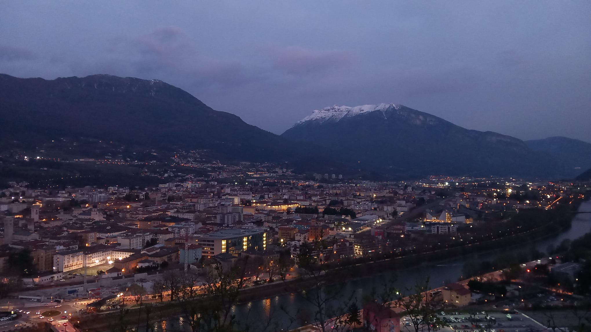
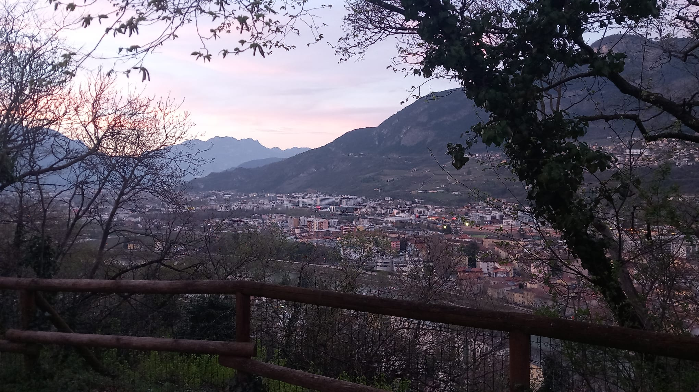
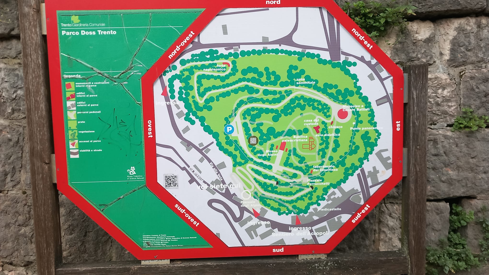

Doss Trento
Here I am up Doss Trento, the closest elevation from the city center. You may recognize this doss by the proud white monument of Cesare Battisti looking over the valley. The doss feels smaller than expected from up here, there are two main grass areas: one next to the monument and another one next to a war museum. I visited the museum a while ago, displayed were uniforms, weapons and tools used by the people of this lands during world war 1. The purpose of this entire doss seems to be to hold the memory of such a terrible past. Some scary weapons lay on the outside, with some people standing over them as if It were a bench. Other people come here to walk ther dogs or just to take a breath.

Figure 1: View of northern Trento

Figure 2: View of southern Trento

Figure 3: Monument to Cesare Battisti

Figure 4: Map of the area
—
Go back: surroundings